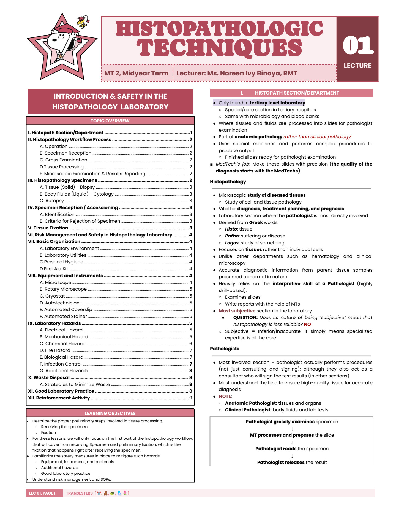
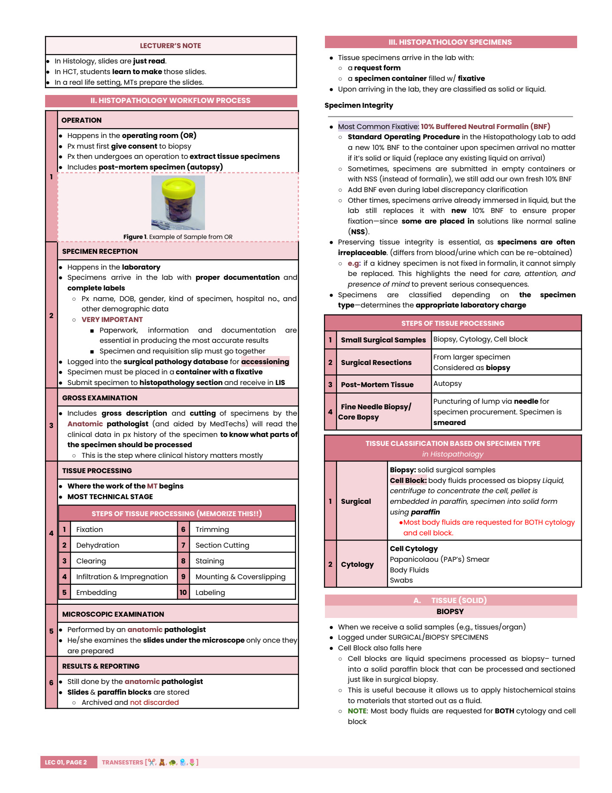
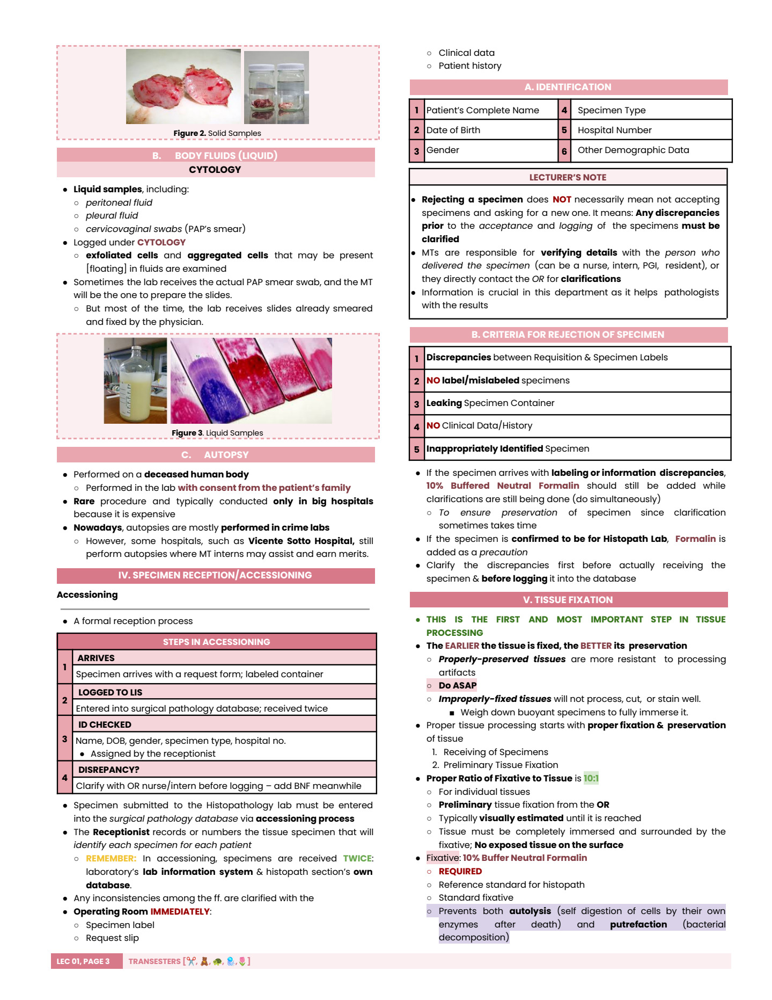
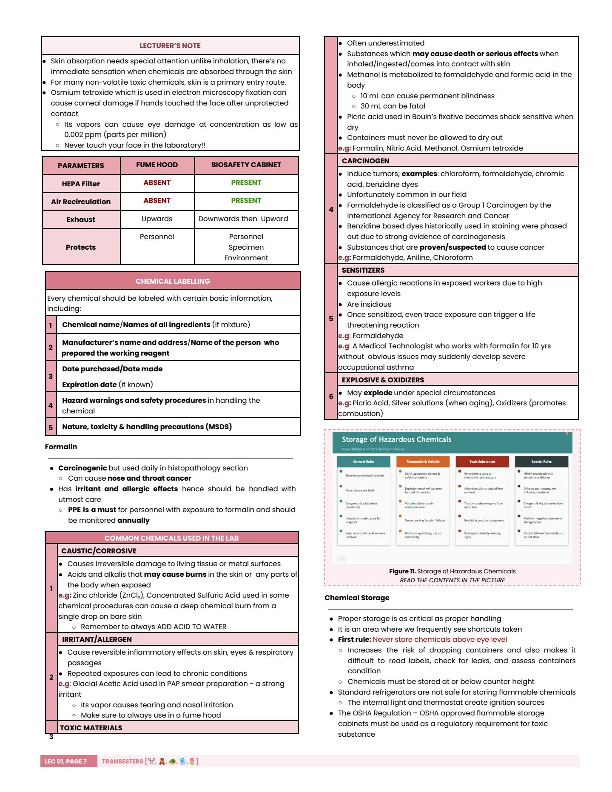
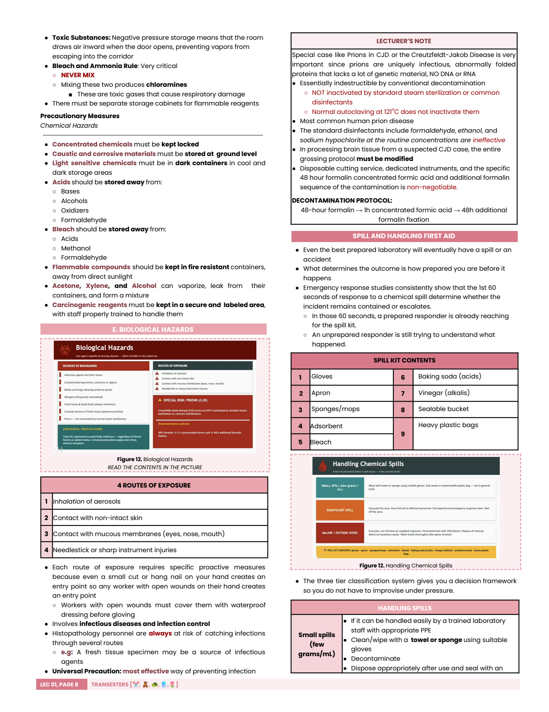
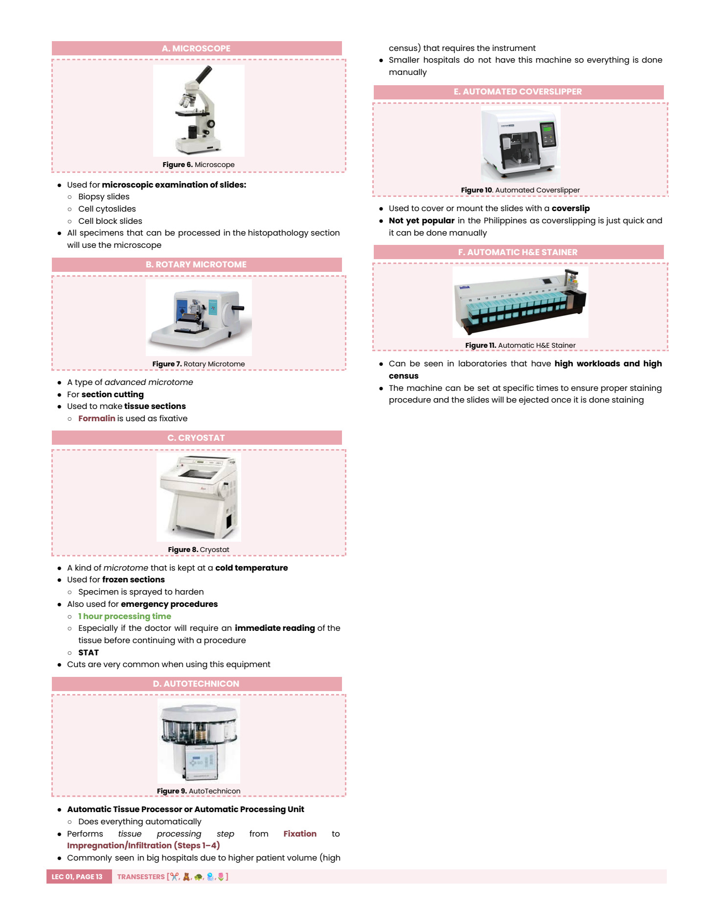
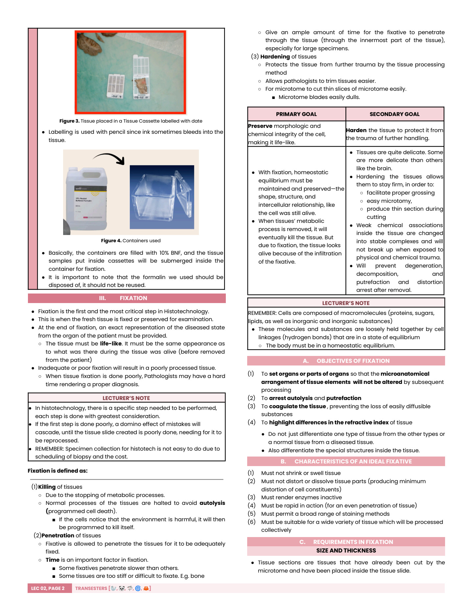
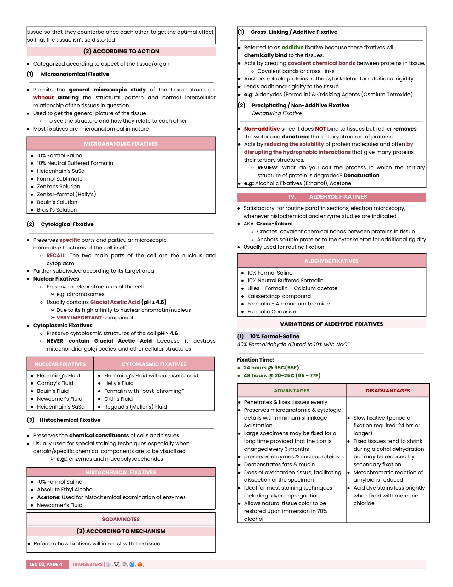
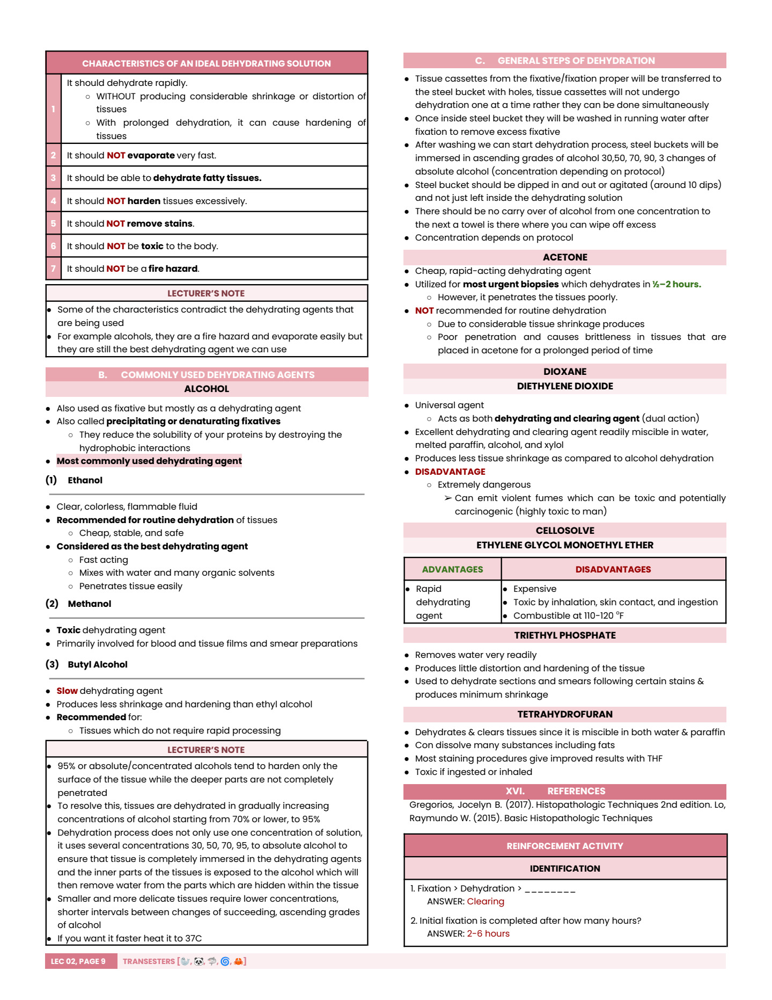

Histopathologic Techniques
A comprehensive study guide for histopathology laboratory workflow, specimen reception, fixation, safety, equipment, fixatives, and dehydration. Use it as a review map before memorizing the finer fixative details.

High-Yield Map
Core Identity
Histopathology is an anatomic pathology laboratory section where tissues are processed into slides for pathologist examination.
Histo = tissuePatho = diseaseLogos = study
MedTech Role
The MedTech prepares high-quality tissue slides. The pathologist grossly examines, reads, interprets, and reports.
Most Tested Idea
Good diagnosis starts with good fixation. Poor fixation leads to poor processing, cutting, staining, and interpretation.
Specimen Rule
Specimen and requisition must match. If discrepancy exists, clarify before logging but preserve with 10% BNF while waiting.
Fixative Ratio
Use at least 10:1 fixative:tissue. Lecture 02 notes ideal fixation volume may be 10-25x tissue volume, with 20x for maximum effectiveness.
Processing Order
Fixation, dehydration, clearing, infiltration, embedding, trimming, section cutting, staining, mounting/coverslipping, labeling.
Introduction and Safety in the Histopathology Laboratory
This part comes from the first source PDF. It covers the histopathology section, workflow, specimen reception/accessioning, safety management, hazards, waste handling, laboratory organization, and equipment.
Histopathology Workflow
The workflow begins before the specimen reaches the lab and ends with report release and archiving of slides and paraffin blocks.
Steps of Tissue Processing
Preserve tissue immediately.
Remove water using graded agents.
Replace alcohol with clearing agent.
Impregnate tissue with paraffin.
Orient tissue in paraffin block.
Expose tissue face.
Cut thin ribbons using microtome.
Add contrast, usually H&E.
Coverslip for microscopy.
Final identification step, but identification must begin before fixation.
Specimens
Solid Tissue: Biopsy / Surgical
- Solid tissue or organ samples.
- Logged under surgical or biopsy specimens.
- Small surgical samples, surgical resections, fine needle/core biopsy, and autopsy tissues may enter this stream.
- Cell blocks also fall here because liquid specimens are converted into solid paraffin blocks.
Liquid Specimens: Cytology
- Peritoneal fluid, pleural fluid, cervicovaginal swabs, and similar body fluids.
- Logged under cytology when exfoliated or aggregated cells are examined.
- Many body fluids are requested for both cytology and cell block.
- PAP smears may arrive already smeared/fixed or may need slide preparation by the MT.


Autopsy
Autopsy is performed on a deceased human body with family consent, is uncommon in routine hospital settings, and is more often associated with large hospitals or crime laboratories. It still requires careful specimen identification and fixation.
Specimen Reception / Accessioning
Accessioning is the formal reception process. It gives the specimen a laboratory identity and prevents mix-ups before processing begins.
Required ID Data
- Complete patient name
- Date of birth
- Gender/sex
- Specimen type
- Hospital number
- Other demographic data
Reject / Clarify When
- Requisition and specimen labels disagree.
- No label or mislabeled specimen.
- Container is leaking.
- No clinical data/history.
- Specimen is inappropriately identified.
Important Nuance
“Reject” does not always mean discard or send away. In the lecture, it means discrepancy must be clarified before acceptance/logging. Add 10% BNF while clarification is happening.
Risk Management and Safety
Histopathology combines sharp instruments, toxic chemicals, biological specimens, heat, electricity, and repetitive work. Risk management starts by identifying hazards and reducing them before an incident occurs.
SOPs Are Mandatory
Standard operating procedures are required written documents, not optional suggestions. They should address hazardous substances, risk assessments, health and safety information, specimen handling, personal hygiene, and regulatory records.
Daily Lab Rules
- Wear gloves and a suitable lab coat.
- Wash hands before leaving and between glove changes.
- No eating, drinking, smoking, cosmetics, phones, or headphones while working.
- Tie hair, secure jewelry, and avoid open-toed footwear.


Hierarchy of Controls
SOPs and Basic Organization
This lecture treats SOPs as enforceable laboratory documents. They are written proof that the laboratory knows how specimens, chemicals, hazards, personnel practices, and equipment are controlled.
What SOPs Must Cover
- Control of hazardous substances and chemical handling.
- Risk assessments for routine and non-routine procedures.
- Health and safety information for staff.
- Specimen handling protocols from reception to storage.
- Personal hygiene practices and PPE expectations.
- Spill response, disposal, first aid, and incident reporting.
Required Records
- Chemical inventory and MSDS/SDS files for every reagent.
- Health and safety training logs.
- PPE records and exposure-related documentation.
- Hazardous waste disposal practices and manifests.
- Occupational injury causes, prevention actions, and investigations.
- Equipment maintenance, calibration, and operating instructions.
Basic Laboratory Organization
Good Laboratory Practice
- Follow written procedures exactly.
- Label reagents, specimens, cassettes, slides, and containers clearly.
- Do not rely on memory when patient identity is involved.
- Keep the workstation clean and clear of non-essential objects.
- Investigate every accident, even small incidents.
- Use equipment only after training and with accessible operating instructions.
- Maintain chemical inventory and disposal documentation.
- Archive slides and paraffin blocks; they are not casually discarded.
Laboratory Hazards
Electrical
- Use GFCIs/ground protection.
- Inspect wiring and cables; avoid foot-traffic areas.
- Maintain, calibrate, and ventilate equipment to avoid overheating.
- Long-term extension cords should be replaced by permanent wiring.
Physical / Mechanical
- Cuts, slips, falls, sharps injuries, ergonomic strain, and acoustic exposure are common.
- Microtome and cryostat blades must be guarded; lock the hand wheel when changing specimens.
- Dispose of sharps in puncture-resistant containers.
Chemical
- Most common and extensive hazard in histopathology/cytology.
- Use fume hoods for volatile/toxic chemicals.
- Label every reagent with name, preparer/manufacturer, dates, hazards, and MSDS precautions.
- Never mix bleach and ammonia; store acids away from bases, alcohols, oxidizers, and formaldehyde.
Biological
- Exposure routes: inhalation, ingestion, inoculation, and skin/mucous membrane contact.
- Use standard precautions and decontaminate appropriately.
- Prion/CJD work requires special protocol: 48h formalin, 1h concentrated formic acid, then 48h formalin.
Chemical Hazard Examples
| Category | Meaning | Examples / Notes |
|---|---|---|
| Caustic / corrosive | Irreversible damage to tissue or metal. | Zinc chloride, concentrated sulfuric acid. Always add acid to water. |
| Irritant / allergen | Reversible inflammation of skin, eyes, or airway; repeated exposure may become chronic. | Glacial acetic acid in PAP preparation. |
| Toxic | May cause serious harm or death by inhalation, ingestion, or skin contact. | Methanol can cause blindness or death; osmium tetroxide can damage eyes. |
| Carcinogen | Proven or suspected cancer-causing agent. | Formaldehyde, chloroform, chromic acid, aniline/benzidine dyes. |
| Sensitizer | May trigger severe allergic reaction after sensitization. | Formaldehyde exposure can lead to occupational asthma. |
| Explosive / oxidizer | May explode or promote combustion. | Dry picric acid, aging silver solutions, oxidizers. |
Waste Disposal and Infection Control
Waste practices in histopathology protect the worker, the patient, the public, and the environment. The lecture emphasizes that improper disposal can harm areas far beyond the laboratory.
Hazardous Chemical Waste
- Used chemicals must not enter soil, drains, or waterways.
- Do not pour diluted chemicals down the sink just because the solution looks weak.
- Use sand or a commercial absorbent for spills.
- Seal absorbed material in labeled containers for disposal.
- Use approved hazardous waste disposal contractors when required.
Tissue and Biological Waste
- Tissue specimens are stored in formalin until approved disposal.
- Dispose of tissues by incineration or approved tissue grinder.
- Never place tissue in ordinary trash.
- Use infection control precautions even when specimens are fixed.
- Special agents such as prions require modified protocols.
Sharps and Glass
- Use labeled, puncture-proof, leak-proof sharps containers.
- Replace sharps containers when 3/4 full.
- Never compress contents or transfer contents between containers.
- Inspect glassware before use and discard cracked glassware.
- Treat minor cuts immediately; major cuts require emergency care.
Dry Ice and Bleach
- Dry ice is disposed only by sublimation in a ventilated area.
- Never put dry ice in sinks, toilets, trash cans, or closed spaces.
- Bleach solutions should not be autoclaved.
- Never mix bleach with ammonia; toxic chloramine gas can form.
- Store bleach away from acids, methanol, and formaldehyde.
Strategies to Minimize Waste
Equipment and Instruments

What to Know
- Microscope: used for slide evaluation.
- Rotary microtome: cuts thin paraffin sections.
- Cryostat: cuts frozen sections, often for urgent/STAT work.
- Autotechnicon: automated tissue processor.
- Automated coverslipper: mounts coverslips consistently.
- Automatic H&E stainer: standardizes routine staining.
For machine acquisition and use, keep records of maintenance, calibration, safety training, operating instructions, and emergency procedures at or near the workstation.
Equipment Quick Reference
| Instrument | Main Use | High-Yield Safety / Quality Point |
|---|---|---|
| Microscope | Slide evaluation and pathologist examination. | Clean optics, correct illumination, and proper handling preserve slide readability. |
| Rotary microtome | Produces thin paraffin sections from embedded tissue blocks. | Blade injuries are common. Guard the blade, lock the hand wheel, and use tools rather than bare fingers when replacing blades. |
| Cryostat | Frozen section cutting, often for urgent/STAT work. | Combines cold injury, sharps risk, and biological exposure; disinfect and handle blades carefully. |
| Autotechnicon / tissue processor | Automates dehydration, clearing, and paraffin infiltration. | Requires correct reagent sequence, reagent freshness, ventilation, and maintenance records. |
| Automated coverslipper | Applies mounting medium and coverslips consistently. | Prevents bubbles and inconsistent mounting when properly maintained. |
| Automatic H&E stainer | Standardizes routine hematoxylin and eosin staining. | Stain quality depends on reagent condition, timing, carryover control, and cleaning. |
| Fume hood | Controls volatile/toxic chemical vapors. | Protects personnel/environment; not the same as a biosafety cabinet. |
| Biosafety cabinet | Controls biological aerosols and protects specimen/personnel/environment. | Has HEPA filtration; not the correct substitute for chemical vapor control. |
Tissue Processing 1-2: Fixation and Dehydration
This part comes from the second source PDF. It focuses on the preliminary tissue processing steps: fixation theory, fixative classes and named formulas, post-fixation handling, washing out, and dehydration.
Fixation Essentials
Goals of Fixation
Primary Goal
Preserve morphologic and chemical integrity so the tissue appears life-like and reflects the disease state at removal.
Secondary Goal
Harden tissue to protect it from trimming, processing, microtomy, staining, and other physical or chemical trauma.
Objectives
- Keep microanatomy unchanged.
- Arrest autolysis and putrefaction.
- Coagulate or stabilize tissue constituents.
- Highlight refractive differences for microscopy.
Requirements and Factors
| Factor | Study Notes |
|---|---|
| Size and thickness | Small/thin pieces fix better. Electron microscopy specimens are very small; light microscopy blocks are larger but still thin enough for penetration. |
| Large tissue | Large organs should be opened or sliced thinly. Brains may be suspended whole in 10% BNF for 2-3 weeks because they are delicate. |
| Volume | Lecture 01 emphasizes 10:1; Lecture 02 gives ideal 10-25x and optimum up to 20x tissue volume. |
| pH / buffer | Neutral pH 6-8 helps prevent formalin heme pigment. Common buffers include phosphate, bicarbonate, cacodylate, and Perinorm. |
| Temperature | Routine manual fixation: room temperature around 20-22°C. Histochemistry/electron microscopy may use 0-4°C. Heated formalin can be used for urgent biopsy at 60°C. |
| Duration | Too long can shrink/harden tissue and reduce enzyme or immunologic reactions. Fresh tissue should enter fixative immediately, ideally within 1 hour. |
| Body fluids | Replace fixative contaminated by body fluids so the ratio and concentration remain accurate. |
Ideal Fixative Characteristics
- Does not shrink or swell tissue.
- Does not distort or dissolve tissue components.
- Renders enzymes inactive.
- Acts rapidly and penetrates evenly.
- Permits broad staining methods.
- Works for many tissue types processed together.
Fixatives


Classification
By Composition
Simple: one component, such as formaldehyde, glutaraldehyde, mercuric chloride, chromic acid, lead fixative, picric acid, acetic acid, acetone, alcohol, or heat.
Compound: two or more fixatives combined to balance effects.
By Action
Microanatomical: preserves general tissue relationships.
Cytological: preserves nuclear or cytoplasmic structures.
Histochemical: preserves chemical constituents for special stains.
By Mechanism
Cross-linking/additive: chemically binds tissue, e.g., formalin and osmium tetroxide.
Precipitating/non-additive: denatures proteins and removes water, e.g., alcohol and acetone.
Major Fixative Families
| Family | Key Examples | High-Yield Use / Caution |
|---|---|---|
| Aldehyde | 10% formol-saline, 10% neutral buffered formalin, formol-corrosive, glutaraldehyde | Routine paraffin work; BNF is best general/reference fixative. Glutaraldehyde is important for electron microscopy. |
| Alcohol | Methanol, ethanol, Carnoy's, Clarke's, Gendre's, Newcomer's | Often dehydrating agents too. Carnoy's is very rapid and useful for urgent small biopsies; alcohols can harden/shrink tissue. |
| Mercuric chloride | Zenker's, Zenker-formol/Helly's, Heidenhain's SuSa | Good nuclear/cytologic detail but poor penetration, RBC lysis, mercuric pigment, toxicity, and washing requirements. |
| Chromic / dichromate | Chromic acid, potassium dichromate, Regaud's, Orth's | Useful for cytoplasmic structures, mitochondria, myelin, and rickettsiae; slow penetration and staining limitations. |
| Picric acid | Bouin's, Brasil's alcoholic picroformol | Useful for embryos/pituitary and glycogen; dry picric acid is dangerous. |
| Other | Glacial acetic acid, osmium tetroxide, acetone, heat fixation | Acetic acid favors nuclear detail and swelling; osmium preserves fats/myelin; acetone is cold/rapid but shrinks tissue. |
Named Fixatives to Memorize
10% Neutral Buffered Formalin
- 40% formaldehyde diluted 1:10 with phosphate buffer, pH 7.0.
- Best protein fixative and comfortable for most tissues.
- Recommended for surgical, post-mortem, and research specimens.
- Fixation time: commonly 4-24 hours.
Carnoy's Fixative
- Absolute alcohol + chloroform + glacial acetic acid.
- Most rapid fixative; 1-3 hours.
- Fixes and dehydrates at the same time.
- Good for chromosomes, lymph glands, urgent biopsies, and glycogen preservation.
Zenker's Fluid
- Mercuric chloride stock solution + glacial acetic acid.
- Fixation time: 12-24 hours.
- Brilliant nuclear/connective tissue staining but poor penetration and mercuric pigment risk.
Orth's Fluid
- 2.5% potassium dichromate + 40% formaldehyde.
- Fixation time: 36-72 hours.
- Used for early degenerative processes, tissue necrosis, rickettsiae, and myelin preservation.
Aldehyde Fixatives
| Fixative | Composition / Time | Best Use | Limitations |
|---|---|---|---|
| 10% formol-saline | 40% formaldehyde diluted to 10% with sodium chloride. 24 h at 35°C or 48 h at 20-25°C. | General microanatomic/cytologic preservation; compatible with many stains. | Slow; tissue may shrink during alcohol dehydration; some staining reactions reduced. |
| 10% neutral buffered formalin | 40% formaldehyde diluted 1:10 with phosphate buffer, pH 7.0. Usually 4-24 h. | Best routine/reference fixative for surgical, post-mortem, and research specimens. | Takes time to prepare; poor for lipids; may reduce PAS mucin and some myelin staining. |
| Formol-corrosive / formol sublimate | 40% formaldehyde + saturated aqueous mercuric chloride. 3-24 h. | Routine post-mortem tissue, cytologic structures, blood cells, reticulum methods, metachromatic stains. | Slow penetration, mercuric chloride deposits, no frozen sections, interferes with decalcification endpoint. |
| Glutaraldehyde | Two formaldehyde residues linked by three carbon chains. 1/2 h for small specimens up to about 2 h. | Electron microscopy, enzyme histochemistry, plasma protein preservation, CNS texture. | More expensive, less stable, slower penetration, can make tissue brittle. |
Alcohol and Precipitating Fixatives
| Fixative | Composition / Time | Best Use | Limitations |
|---|---|---|---|
| 100% methanol | Methanol; fixes and dehydrates at the same time. | Dry/wet smears, blood smears, bone marrow smears. | Toxic; slow penetration; overhardening if left more than 48 h. |
| Ethyl alcohol | 70-100% ethanol. 18-24 h. | Compound fixatives, blood/tissue films, smears, nucleoproteins, nucleic acids, enzyme studies. | Hardening and shrinkage, glycogen polarization, poor preservation of hemolyzed RBC/WBC at lower concentration. |
| Carnoy's | Absolute alcohol + chloroform + glacial acetic acid. 1-3 h. | Most rapid fixative; urgent small biopsy, chromosomes, lymph glands, glycogen, Nissl/cytoplasmic granules. | RBC hemolysis, shrinkage, excessive hardening, lipid/myelin dissolution, acid-soluble granule loss. |
| Gendre's fluid | Alcohol-formalin variant. | Rapid diagnosis; fixes and dehydrates together; glycogen and micro-incineration; sputum mucus coagulation. | Use carefully because alcohol-based fixation can harden and shrink tissue. |
| Newcomer's fluid | Isopropanol + propionic acid + petroleum ether + acetone + dioxane. 12-18 h at 3°C. | Mucopolysaccharides, nuclear proteins, Feulgen reaction, nuclear/histochemical fixation. | Cold fixative; composition includes hazardous solvents. |
Metallic, Chromic, Picric, and Other Fixatives
| Fixative | Composition / Time | Best Use | Limitations |
|---|---|---|---|
| Zenker's fluid | Mercuric chloride stock solution + glacial acetic acid. 12-24 h. | Small liver, spleen, connective tissue fibers, nuclei; brilliant nuclear/connective tissue staining. | Poor penetration, RBC lysis, removes iron from hemosiderin, mercuric pigment, requires washing. |
| Zenker-formol / Helly's | Mercuric chloride stock solution + 40% formaldehyde. 12-24 h. | Pituitary, bone marrow, spleen/liver, blood-containing organs, cardiac intercalated discs. | Brown pigment if blood-rich tissue remains more than 24 h; pigment removed by saturated alcoholic picric acid or sodium hydroxide. |
| Heidenhain's SuSa | Mercuric chloride + glacial acetic acid + formaldehyde + NaCl + trichloroacetic acid. 12-24 h. | Tumor biopsy, especially skin; excellent cytologic fixative. | Transfer directly to high-grade alcohol to avoid undue swelling. |
| Regaud's fluid | 3% potassium dichromate + 40% formaldehyde. 12-48 h. | Chromatin, mitochondria, mitotic figures, Golgi bodies, RBCs, colloid tissues. | Slow penetration; tissue should be thin; nuclear staining poor; does not preserve fats. |
| Orth's fluid | 2.5% potassium dichromate + 40% formaldehyde. 36-72 h. | Early degeneration, necrosis, rickettsiae/bacteria, myelin. | Similar limitations to Regaud's; slow penetration. |
| Lead fixatives | Lillie's alcoholic lead nitrate formalin; lead subacetate. | Acid mucopolysaccharides and connective tissue mucin. | Lead carbonate precipitate can form; remove by filtration or acetic acid dropwise. |
| Bouin's | Picric acid + glacial acetic acid + 40% formaldehyde. 6-24 h. | Embryos and pituitary biopsies; nuclear detail with counterbalanced shrink/swell effects. | Picric acid hazard; excess picric acid must be washed out appropriately. |
| Brasil's alcoholic picroformol | Picric acid + formaldehyde + ethanol/isopropanol + trichloroacetic acid. | Less messy Bouin alternative; glycogen demonstration. | Automatic processing may need multiple short changes before absolute alcohol. |
| Osmium tetroxide | Osmium-based fixative; used in Flemming variants. | Fats, myelin, neurohistology, neuropathy, electron microscopy. | Expensive, slow penetration, difficult counterstaining, serious eye/skin hazard. |
| Heat fixation | Thermal coagulation rather than chemical fixation. | Frozen sections, rapid diagnosis, bacteriologic smears. | Must be controlled to avoid distortion. |
Post-Fixation Steps
Fixation does not end the preparation logic. Some tissues need additional fixation, mordanting, or washing before dehydration and later staining.
Secondary Fixation
Placing already-fixed tissue into a second fixative to improve demonstration of a target substance, enable special stains, or further harden/preserve the tissue.
Post-Chromatization
A form of secondary fixation where primary fixed tissue is placed in 2.5-3% potassium dichromate for about 24 h. Potassium dichromate acts as a mordant and improves cytologic preservation/staining.
Washing Out
Removal of excess fixative after fixation to improve staining and remove artifacts before further processing.
Washing-Out Agents
| Agent | Use / Note |
|---|---|
| Tap water | General washing, especially for removing water-soluble excess fixative. |
| 50-70% ethanol | Used when alcohol-based handling is appropriate and to transition toward dehydration. |
| Alcoholic iodine | Used for excess mercuric fixative, not picric acid. |
Artifact and Recovery Notes
Dehydration
Dehydration is the second step in manual tissue processing after fixation. It removes intracellular and extracellular water before wax impregnation.

General Dehydration Path
Ideal Dehydrating Solution
- Rapid dehydration without major shrinkage/distortion.
- Does not evaporate too fast.
- Can dehydrate fatty tissues.
- Does not harden excessively or remove stains.
- Non-toxic and non-fire-hazardous in the ideal case.
Best Routine Agent
Ethanol is considered the best dehydrating agent: cheap, stable, fast acting, miscible with water and organic solvents, and penetrates tissue easily.
Technique Pearls
- Use ascending concentrations to avoid surface hardening.
- Agitate/dip cassettes rather than leaving them motionless.
- Prevent carryover between alcohol grades.
- Volume should not be less than 10x tissue volume.
Dehydrating Agents
| Agent | Use | Limitations |
|---|---|---|
| Ethanol | Routine dehydration; best overall agent. | Flammable; high concentrations can harden tissue surface before deeper penetration. |
| Methanol | Blood and tissue films/smears. | Toxic. |
| Butyl alcohol | Slow dehydration with minimum shrinkage. | Not for rapid processing. |
| Acetone | Cheap, rapid urgent biopsy dehydration in 1/2-2 hours. | Poor penetration, shrinkage, brittleness; not routine. |
| Dioxane | Universal dehydrating and clearing agent. | Extremely dangerous and potentially carcinogenic fumes. |
| Cellosolve | Rapid dehydrating agent. | Expensive, toxic by inhalation/skin/ingestion, combustible. |
| Triethyl phosphate | Removes water readily with little distortion/hardening. | Lecture reinforcement identifies it as having no listed disadvantage. |
| Tetrahydrofuran | Dehydrates and clears; miscible in water and paraffin. | Can dissolve fats; toxic if ingested or inhaled. |
Manual Dehydration Procedure
- Tissue cassettes are transferred from fixation into a perforated steel bucket or cassette holder.
- Cassettes are washed in running water after fixation to remove excess fixative when the protocol requires it.
- Cassettes are immersed in ascending alcohol concentrations such as 30%, 50%, 70%, 90/95%, then several changes of absolute alcohol.
- The basket is dipped or agitated, not simply abandoned motionless in solution.
- Excess liquid is drained or blotted between changes to avoid carryover from one concentration to the next.
- After dehydration, tissue is ready for clearing, where alcohol is replaced by a clearing agent compatible with paraffin.
Why Ascending Grades Matter
Common Dehydration Mistakes
| Mistake | What Happens | Prevention |
|---|---|---|
| Using one alcohol concentration only | Incomplete water removal or abrupt shrinkage. | Use graded concentrations according to protocol. |
| Too little dehydrating solution | Poor penetration and incomplete dehydration. | Use at least 10x tissue volume. |
| No agitation | Slow exchange and uneven dehydration. | Dip/agitate the cassette basket as taught. |
| Carryover between grades | Dilutes the next solution and weakens the protocol. | Drain or wipe excess solution before transfer. |
| Prolonged acetone exposure | Brittleness and shrinkage. | Reserve acetone mainly for urgent uses and follow time limits. |
| Ignoring flammability/toxicity | Fire, inhalation, or skin exposure risk. | Use ventilation, proper storage, PPE, and chemical SOPs. |
Slide Appendix, Cram Tables, and Self-Check
These sections combine both lectures for review. The slide appendix remains divided by lecture so the original source boundaries stay clear.
All Lecture Slides
Use this appendix when you want to cross-check the guide against the original lecture visuals. The main sections above are rewritten for study flow; these images preserve the source slide sequence.
Lecture 01: Introduction and Safety
Lecture 02: Fixation and Dehydration
Fast Review Tables
Fixation Numbers
| Prompt | Answer |
|---|---|
| Preliminary fixation time after removal | Often 2-6 hours, depending on protocol and urgency. |
| Fresh specimen transfer to fixative | Immediately; lecture notes emphasize less than 1 hour. |
| Routine manual fixation temperature | 20-22°C. |
| Urgent biopsy heated formalin | 60°C. |
| DNA fixation temperature in reinforcement | 65°C. |
| Formol-corrosive fixation time | 3-24 hours. |
| Zenker's composition | Mercuric chloride stock solution + glacial acetic acid. |
| Best dehydrating agent | Ethanol. |
Fume Hood vs Biosafety Cabinet
| Parameter | Fume Hood | Biosafety Cabinet |
|---|---|---|
| HEPA filter | Absent | Present |
| Air recirculation | Absent | Present |
| Exhaust direction | Upward | Downward then upward |
| Protects | Personnel and environment from chemical fumes | Personnel, specimen, and environment for biological work |
Specimen Reception Cram Table
| Item | Must Remember |
|---|---|
| Specimen arrival | Request form + labeled container + fixative; specimen and requisition must travel together. |
| Received twice | Logged in the laboratory information system and the histopathology section database. |
| Discrepancy action | Clarify with OR/nurse/intern/resident before logging; add 10% BNF while waiting. |
| Solid tissue | Biopsy/surgical specimen; includes cell block after body fluid is made solid in paraffin. |
| Liquid specimen | Cytology; may also be processed as cell block. |
| Slides and blocks | Archived after reporting, not discarded casually. |
Fixative Classification Cram Table
| Category | Examples | Core Idea |
|---|---|---|
| Microanatomical | 10% formol saline, 10% BNF, Heidenhain's SuSa, Zenker's, Helly's, Bouin's, Brasil's | Preserve general tissue structure and intercellular relationship. |
| Nuclear cytological | Flemming's with acetic acid, Carnoy's, Bouin's, Newcomer's, Heidenhain's SuSa | Preserve nuclear structures; often contain glacial acetic acid. |
| Cytoplasmic cytological | Flemming's without acetic acid, Helly's, formalin post-chroming, Orth's, Regaud's | Preserve cytoplasmic structures; avoid glacial acetic acid because it can damage mitochondria/Golgi. |
| Histochemical | 10% formol saline, absolute ethyl alcohol, acetone, Newcomer's | Preserve chemical constituents such as enzymes and mucopolysaccharides. |
| Cross-linking/additive | Formalin, glutaraldehyde, osmium tetroxide | Chemically bind to tissue proteins and increase rigidity. |
| Precipitating/non-additive | Alcohols and acetone | Denature proteins and remove water without chemically binding to tissue. |
Self-Check
Tap each item to reveal the answer.
Identification
What is the first and most important step in tissue processing?
What fixative is the reference standard in histopathology?
What ratio of fixative to tissue is emphasized in Lecture 01?
What does cell block mean?
What is the most technical stage of the histopath workflow?
What is the best dehydrating agent?
What is the dehydrating agent identified as having no disadvantage in the reinforcement activity?
What fixative helps preserve lipids and mitochondria?
What fixative enhances nuclear detail in the reinforcement activity?
What is the ideal chemical and concentration for immunoelectron microscopy?
What is the fixation temperature for urgent biopsy?
What is the routine manual fixation temperature?
What is the composition of Zenker's fluid?
What is the fixation time for formol-corrosive?
True or False
Labeling only matters at the final labeling step.
Most formalin can be washed out after 12-24 hours.
Electron microscopy uses a more or less isotonic level.
Alcoholic iodine removes excess picric acid.
Acetone is cheap and rapid acting.
Subjective interpretation means histopathology is inferior or unreliable.
Cytoplasmic fixatives should contain glacial acetic acid.
Dry ice may be disposed in a closed trash container if the amount is small.
Bleach and ammonia can be mixed for stronger disinfection.
Standard autoclaving at 121°C inactivates prions.
High concentrations of alcohol can harden tissue surface before deeper dehydration is complete.
Don't Confuse
Fume hood vs biosafety cabinet: which one handles chemical vapors?
Biopsy vs cytology vs cell block?
Primary vs secondary goal of fixation?
Additive vs non-additive fixation?
Nuclear vs cytoplasmic fixatives?
Workflow Drill
List the six broad histopathology workflow stages.
List the ten tissue processing steps.
What should be done if a specimen arrives with a label discrepancy?
When should a sharps container be replaced?
What is the CJD/prion decontamination sequence from the lecture?
How to Study This
- Memorize the workflow and the ten tissue processing steps first.
- Then drill accessioning rules, rejection criteria, and the 10% BNF/10:1 fixation rule.
- For safety, group hazards by electrical, physical, chemical, biological, fire, and waste disposal.
- For Lecture 02, learn fixation concepts before named fixatives. Named fixatives are easier once you know whether they cross-link, precipitate, shrink, swell, preserve nuclei, or preserve cytoplasm.
- Finish with dehydration: purpose, graded alcohol logic, and agent pros/cons.